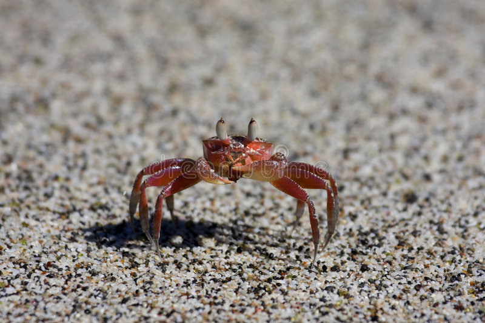

Serafin es un cangrejo muy feo el cual está buscando novia pero no encuentra porque
es muy feo, tiene 34 años y le gusta comer langostas del oceano atlantico

Historia
Era se una vez un cangrejo muy jugueton jugando al juego del balon saltarin,
y se murio